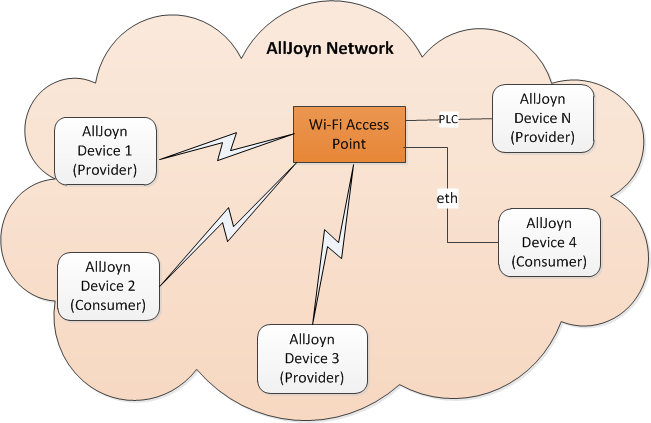
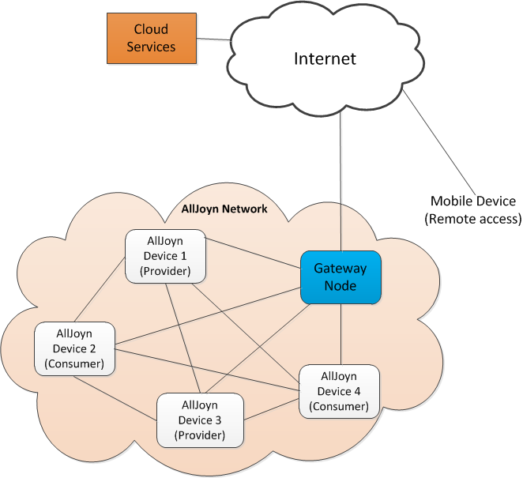
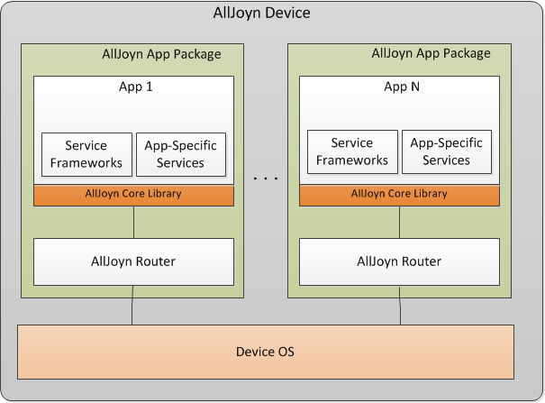
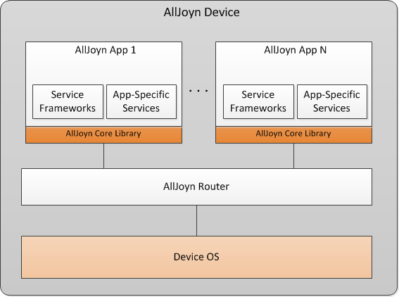
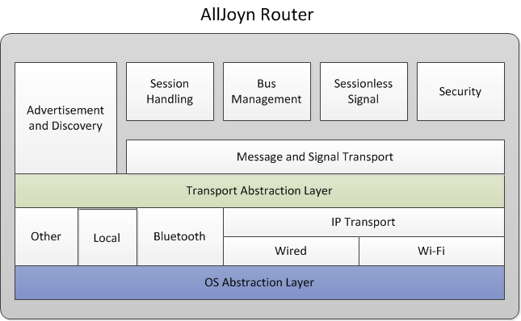
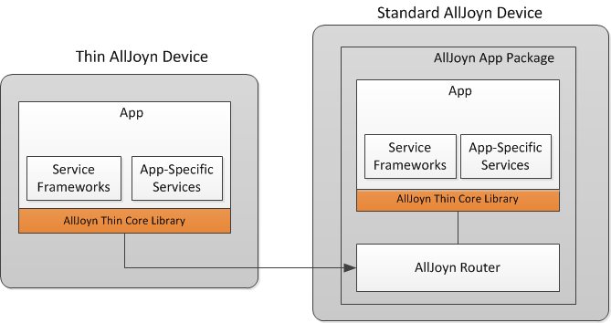

System Architecture 系统结构
Network architecture 网络结构
The AllJoyn™ network architecture is dependent upon the network deployment scenario. This section captures the following deployment scenarios: AllJoyn™ 网络结构由网络的部署方案决定。这部分包含了以下几种部署方案：
- Standalone AllJoyn network: A proximal network with a set of peer devices which could be connected over the same or different access mediums.
-
独立 AllJoyn 网络：一个拥有一系列对等设备的临域网络。设备之间可以通过相同或不同的介质相互连接。
-
Remote accessible AllJoyn network: A proximal network where services provided by devices are accessible and controllable from outside the proximal network.
- 远程访问的 AllJoyn 网络：一些设备为临域网络提供了被临域网络之外的的网络访问和控制的功能。
Standalone AllJoyn network 独立 AllJoyn 网络
A standalone AllJoyn network architecture is fairly simple with two or more peer nodes coming together to dynamically form an AllJoyn network. Peers can be connected over different access networks such as Wi-Fi. The AllJoyn advertisement and discovery mechanism takes care of seamlessly discovering these peers independent of the underlying transport being used.
独立 AllJoyn 网络结构是相当简单的。它由两个或以上的节点动态形成。节点之间可通过不同的接入方式（如 WI-FI）进行连接。Alljoyn 的 advertisement 和 discovery 机制可以无视基础网络传输方式，无缝地发现这些节点。 The following figure captures the network architecture for a typical standalone AllJoyn network. 下图展示了一个典型的独立 ALlJoyn 网络的结构。

图: Standalone 独立 AllJoyn 网络结构
NOTE: In a Wi-Fi deployment, the AllJoyn framework requires wireless isolation to be turned off at the access points to enable peer-to-peer communication. 注意: 在 Wi-Fi 部署中，需要关闭接入点的无限独立功能以允许端对端的连接。
Bridging multiple transports 桥接多种传输方式
A standalone AllJoyn network can involve nodes connected over both wireless and wired transport, e.g., nodes connected over Wi-Fi, PLC, and Ethernet. Nodes in such a network can communicate with each other as long as wireless isolation is not enabled on the Wi-Fi Access Point (AP). 独立 AllJoyn 网络能够包含通过有线和无线方式连接的节点，如通过 Wi-Fi、PLC、Ethernet 连接的节点。只要 Wi-Fi Access Point（AP）上的 wireless isolation 被关闭，网络中的各个节点之间就可以相互通信。
The following figure captures the high-level network architecture for an AllJoyn network with devices connected over Wi-Fi, PLC, and Ethernet transports. 下图展示了使用 Wi-Fi、PLC、Ethernet 接入方式的设备构成的高规格的 AllJoyn 网络结构。

Figure: Bridging multiple transports 桥接多种传输方式
Remote accessible AllJoyn network 可远程操作的 AllJoyn 网络
A remote accessible AllJoyn network is a proximal IoE network
where services provided by devices are accessible and/or controllable
from outside the proximal IoE network. The remote accessibility is
achieved by having a Gateway node in the system. The Gateway node
exposes device functionality and control to an existing cloud-based
service either via standard Internet style APIs (e.g. REST). A mobile
device outside the proximal IoE network can communicate with devices
in the proximal IoE network via the cloud-based service and via the
Gateway node.
可远程操作的 AllJoyn 网络是一种 proximal IoE network。该网络中的设备提供了被远程（在 proximal IoE network 之外）访问／控制的服务。远程接入的服务是由系统中的 Gateway 节点实现的。Gateway 节点通过标准 Internet 框架 API（如 REST）将设备的功能和控制权限放置在现有的基于云的服务上。
The following figure captures the high-level network architecture for a remote accessible AllJoyn network. 下图展示了可远程访问 AllJoyn 网络的高规格的 AllJoyn 网络结构。

图: 可远程访问 AllJoyn 网络的高规格的 AllJoyn 网络结构
Device architecture 设备结构
An AllJoyn-enabled device can support one or more AllJoyn
applications. The AllJoyn router can be bundled with each of
these applications on devices such as mobile phone and tablets.
Alternately, the AllJoyn router can be installed separately as
a standalone router on the device and multiple applications can
make use of it; examples of devices include TVs and set-top boxes
(STBs). There can also be hybrid deployment cases where a single
device has both a bundled AllJoyn router for certain apps and a
standalone AllJoyn router for other apps on the device.
一个 AllJoyn 设备支持一个或多个 AllJoyn 应用程序。AllJoyn 路由可以与设备（如手机和平板电脑）上的任一应用程序捆绑。或者，AllJoyn 路由被以独立路由的身份安装在设备上，多个应用程序都可以使用这个路由，如电视和机顶盒（STB）。另外，捆绑路由（为特定应用程序）和独立路由（为设备上的其他应用程序）可以同时存在在一个设备上，我们称之为混合部署方式。
NOTE; An app always looks for a preinstalled AllJoyn core, so this will only happen if the preinstalled AllJoyn core was a lower version than the bundled AllJoyn core. 注意: 如果某一个应用程序始终在搜索 preinstalled AllJoyn core，那么一定是此 preinstalled AllJoyn core 比 bundled AllJoyn core 的版本低所导致的。
The following deployment scenarios are captured for the AllJoyn device: 通常有以下几种部署 AllJoyn 设备的方案：
- Single app with bundled AllJoyn router
- Multiple apps with bundled AllJoyn router
- Multiple apps with standalone AllJoyn router
- 单一应用程序与捆绑的 AllJoyn 路由
- 多个应用程序与捆绑的 AllJoyn 路由
- 多个应用程序与独立的 AllJoyn 路由
Single app with bundled AllJoyn router 单一应用程序与捆绑的 AllJoyn 路由
In this deployment, the AllJoyn application package includes an app and an AllJoyn router. The app can support application-specific services as well as one or more service frameworks. The application connects to the AllJoyn router via the AllJoyn standard core library. In case of the bundled AllJoyn router, the communication between the app and AllJoyn router is local (within the same process) and can be done using function/API calls. 此部署方式中，AllJoyn 应用程序包包含了一个应用程序和一个 AllJoyn 路由。此应用程序支持应用专属服务和一个或多个服务架构。应用程序通过 AllJoyn 标准内核资源库连接 AllJoyn 路由。在捆绑路由的情况下，应用和 AllJoyn 路由之间的通信是仅在本地的（通过同一进程），可以通过调用 function／API 来实现。
The following figure captures the AllJoyn device architecture for a single app with bundled AllJoyn router deployment scenario. 下图展示了单一应用程序与捆绑 AllJoyn 路由部署方式的 AllJoyn 设备结构。

图: AllJoyn 设备结构 (单一应用程序与捆绑 AllJoyn 路由)
Multiple apps with bundled AllJoyn router 多应用程序与捆绑 AllJoyn 路由
In this deployment, the AllJoyn-enabled device supports multiple applications. Each of these applications has a separate instance of an AllJoyn router bundled with that application package. 此部署方式中，AllJoyn 设备支持多个应用程序。在每一个程序包中，应用程序都有一个与自己相捆绑的 AllJoyn 路由。
The following figure captures the AllJoyn device architecture for multiple apps with a bundled AllJoyn router deployment scenario.
下图展示了多应用程序与捆绑 AllJoyn 路由部署方式的 AllJoyn 设备结构。

图: AllJoyn 设备结构 （多应用程序与捆绑 AllJoyn 路由)
Multiple apps with standalone AllJoyn router 多应用程序与独立 AllJoyn 路由
In this deployment, the AllJoyn-enabled device supports a standalone AllJoyn router. The multiple applications on the device connect using the same standalone AllJoyn router. The communication between an application and the standalone AllJoyn router happens across process boundaries and can happen over transports like UNIX domains sockets or TCP。
此部署方式中，AllJoyn 设备提供了一个独立的 AllJoyn 路由。同一设备上的不同应用程序使用同一个独立 AllJoyn 路由连接网络。应用程序和独立 AllJoyn 路由之间的通信跨越进程边界，能够在如 UNIX domains sockets 和 TCP 的传输方式下实现。
The following figure captures the AllJoyn device architecture for multiple apps with a standalone AllJoyn router deployment scenario. 下图展示了多应用程序与独立 AllJoyn 路由部署方式的 AllJoyn 设备结构。

图: AllJoyn 设备结构 （多应用程序与独立 AllJoyn 路由)
AllJoyn router architecture AllJoyn 路由结构
The AllJoyn router provides a number of functionalities to enable key features of the AllJoyn framework. The following figure captures the functional architecture for the AllJoyn router. AllJoyn 路由为 AllJoyn 架构的关键性功能提供了许多功能上的支持。下图展示了 AllJoyn 路由的功能结构。

图: AllJoyn 路由的功能结构
The AllJoyn router supports key features over multiple underlying transports. The Advertisement and Discovery module provides transport agnostic advertisement and discovery functionality. Similarly, modules shown for other features including Session, Data Exchange, and Sessionless Signal modules offer transport-agnostic functionality for those features. All these AllJoyn features work over various transports including Wi-Fi, wired transports, Bluetooth, and any local transport. AllJoyn 路由提供了夸多种传输方式的重要功能。Advertisement 和 Discovery 模块提供了与传输协议无关的 advertisement 和 discovery 的功能。相似地，会话、数据交换、Sessionless Signal 模块提供了与传输协议无关的相应功能。所有这些 AllJoyn 功能可以在多种传输方式下运行，包括 Wi-Fi、有线传输、蓝牙和任何本地网络。
The AllJoyn bus management and control functions are provided by the Bus Management module. The Security module provides AllJoyn security functionality including SASL-based authentication. AllJoyn 总线管理和控制功能由 Bus Management 模块提供。Security 模块提供了包括基于 SASL 的身份验证在内的 AllJoyn 安全功能。
The Message and Signal Transport layer provides functionality to encapsulate application layer signaling and data into D-Bus format message encapsulation. The Transport Abstraction Layer provides abstraction for various underlying transports for core AllJoyn features. The various transport-related modules provide that transport-specific functionality to accomplish core AllJoyn functions. The AllJoyn router supports an OS Abstraction Layer to interact with different underlying OS platforms. Message and Signal 传输层提供了将应用层信号和数据封装成 D-Bus 格式信令的的功能。Transport Abstraction Layer 为核心 AllJoyn 功能提供了不同底层传输方式的抽象概念。不同的传输相关模块提供特定的传输功能，共同实现核心 AllJoyn 功能。AllJoyn 路由支持与不同底层 OS 平台进行交互的操作系统抽象层。
Thin app architecture 精简应用程序结构
An AllJoyn thin app is designed for energy-, memory-, and CPU-constrained devices. The thin app is designed to have a very small memory footprint and is typically single-threaded. The thin app includes the application code and AllJoyn thin core library (AJTCL); it does not include an AllJoyn router. AllJoyn 精简应用程序是为功耗、内存和 CPU 受限的设备所设计。精简应用程序占用很少的内存并且通常是单线程的。精简应用程序包含应用程序代码和 AllJoyn 精简内核资源库 （AJTCL），不包含 AllJoyn 路由。
A thin AllJoyn device only has a lightweight thin app running on the device that makes use of an AllJoyn router running on a standard AllJoyn device to advertise, discover, and connect with AllJoyn peers. Communication between the thin app and the AllJoyn router occurs across device boundaries over TCP transport. 精简 AllJoyn 设备上的应用程序通过一个运行在标准 AllJoyn 设备上的 AllJoyn 路由所提供的 advertise、discover 功能与其他的 AllJoyn 设备相连接。通过TCP传输协议，可以实现精简应用程序与 AllJoyn 路由之间的跨设备通信。
The following figure captures the AllJoyn thin app architecture. 下图展示了 AllJoyn 精简应用程序结构

图: AllJoyn 精简应用程序结构
AllJoyn 架构协议栈
The following figure captures the high-level protocol stack for the AllJoyn framework. 下图展示了高规格的 AllJoyn 架构协议栈。

图: AllJoyn 协议栈
At the top level, the AllJoyn framework protocol stack consists of an application providing a number of application layer services and supporting some service frameworks. These app layer services are defined by AllJoyn interfaces supported by the app. The app sits on top of the AllJoyn core library, which enables an app to invoke core AllJoyn functionality. 在顶层，AllJoyn 架构协议栈包含了一个提供多种应用层服务和支持多种服务架构的应用程序。这些应用层服务由应用程序支持的 AllJoyn 接口定义。应用程序处在 AllJoyn 核心资源库的顶层，使得应用程序能够调用核心 AllJoyn 功能。 Below the AllJoyn core library sits the AllJoyn router that implements core AllJoyn features including advertisement/discovery, session establishment, sessionless signals, authentication, etc. The AllJoyn router supports multiple underlying transports for discovery and communication and provides an abstraction layer for each of the supported transport. The AllJoyn router belongs to the application layer in the standard OSI layering model. 在 AllJoyn 核心资源裤之下的是 AllJoyn 路由，它提供了包含 advertisement/discovery、会话建立、sessionless signals、认证等一系列的核心 AllJoyn 功能。AllJoyn 路由支持多种用于发现和通信的底层传输方式，并为每一个支持的传输方式提供一个抽象层。在标准 OSI 分层模型中，AllJoyn 路由属于应用层。
Under the AllJoyn router reside the standard OSI layers: transport, network, layer 2 and physical layer. 在 AllJoyn 路由之下是标准 OSI 分层： 传输层、网络层、layer 2 和物理层。